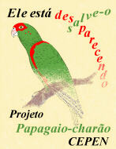
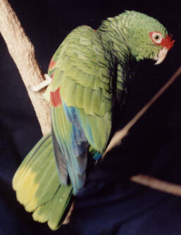
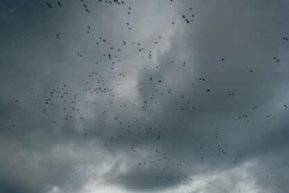
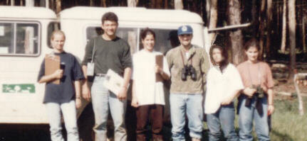
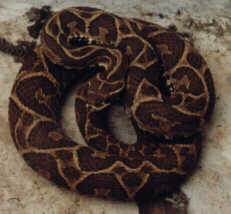
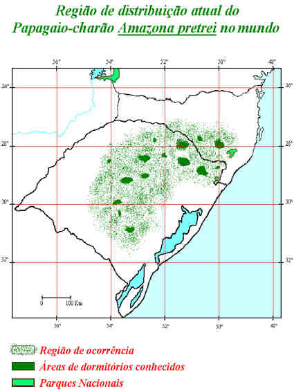

Para Índice Projetos


Foto: arquivo CEPEN / 537 / Marcelo De Negri Xavier
Papagaio-charão,
Amazona pretrei.
Projeto
Papagaio-charão
Introdução
Mapa da distribuição atual da espécie
Subprojeto:
Ninhos Artificiais
Participação da População
Introdução
A
família Psittacidae
é dentre as aves,
talvez a que mais chame a atenção pela sua presença.
Algumas pessoas são atraídas pelo seu belo colorido,
outras pela algazarra que estas aves promovem, ou ainda,
pelo tamanho dos seus bandos.
Fato é que dificilmente passam desapercebidas em seu ambiente natural.
Por estas e outras características como a facilidade de imitar sons,
a fácil sobrevida em cativeiro e a grande docilidade que apresentam,
esta família tem pago um sério tributo: o de servir como animal de estimação.
Isto está contribuindo decisivamente
para levar a grande maioria de suas espécies
rumo à extinção.
A ação humana desinformada,
a inexistência de uma educação de base voltada ao macroambiente
em que se vive e trabalha,
a falta de uma política de incentivo à preservação
e a deficiência de implementação da legislação vigente,
tem causado uma má utilização dos recursos naturais existentes
e a sua não renovação ao longo do tempo.
Salvar o Papagaio-charão e seu ambiente é um grande desafio.
Para tanto, é necessário por um lado,
a conscientização e o apoio das pessoas de um modo geral,
e por outro, o deslindamento dos seus mistérios.

Local: Muitos Capões - RS - Brasil. Arquivo CEPEN / 107 / Marcelo De Negri Xavier
Bando de Papagaios-charão ao anoitecer
(em torno de 340 indivíduos na foto).

Local: Muitos Capões - RS - Brasil. Foto: arquivo CEPEN / 122
(Janúsia G. F. Bellaver, Luiz F. Câmara, Viviane Alves, Marcelo De Negri Xavier,
Indianara N. Ribas e Patrícia M. Gouvêa).
Equipe de pesquisadores e colaboradores
do histórico censo que apurou contagem de 11.147 papagaios-charão.
Número considerado como do total de papagaios desta espécie então existentes.
(no mesmo dia, não foram registrados papagaios-charão nos outros dormitórios conhecidos)

Local: Coxilha - RS - Brasil. Arquivo CEPEN / 317 / Marcelo De Negri Xavier
Cobra Cruzeira,
Bothrops alternatus.
Atividades de campo requerem atenção, pois o perigo pode estar ao lado.
